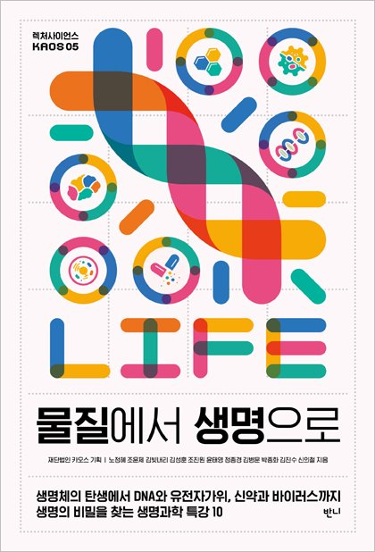

생명이라는 거대한 질문에 도전한다!
생명체의 탄생에서 DNA와 유전자 가위, 신약과 바이러스까지 생명의 비밀을 찾는 흥미로운 생명현상 탐구서!
《물질에서 생명으로》는 생명의 정의에서 시작하여 유전, 생명의 기본 물질, 에너지, DNA와 유전자가위, 신약과 바이러스에 이르기까지, 생명의 시작에 대한 근본적인 질문으로 시작하여 그 응용과 실전에 대한
흥미로운 설명과 사례를 통해 대중이 좀 더 재밌게 과학을 접하고 이해할 수 있게끔 소개한다. 과학은 불변의 진리가 아닌 자연에 대한 ‘가장 훌륭한 설명’이므로 더 나은 설명이 등장하면 기꺼이 그 자리를
내어주겠지만, 열린 학문에 대한 질문과 토론은 곧 즐거움이 되고 우리 삶을 더 나은 것으로 만들어줄 것이다.